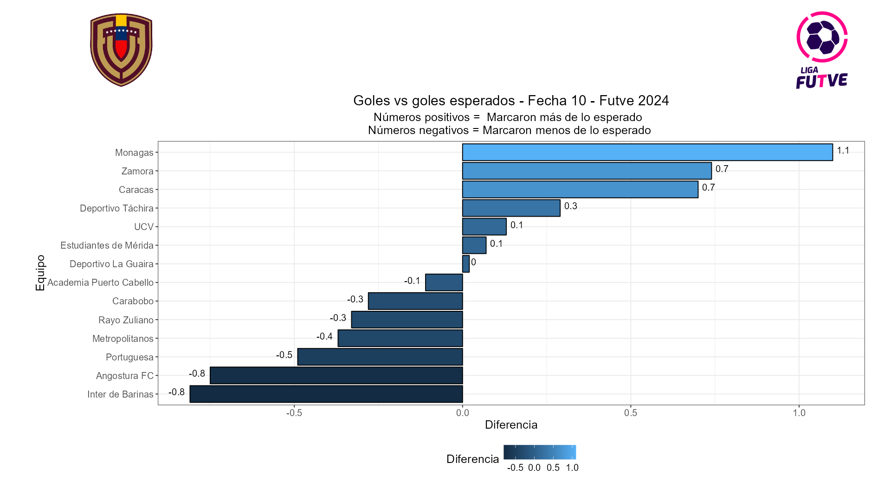
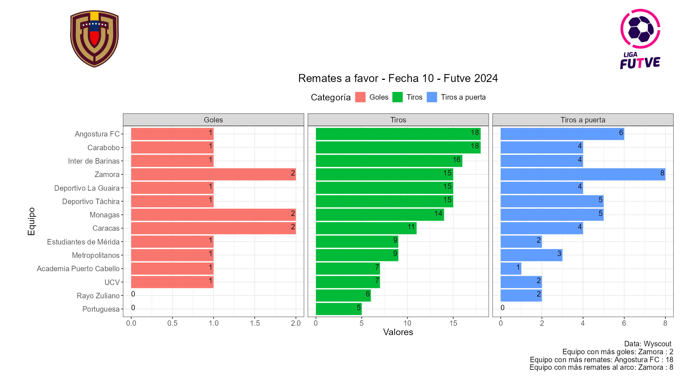
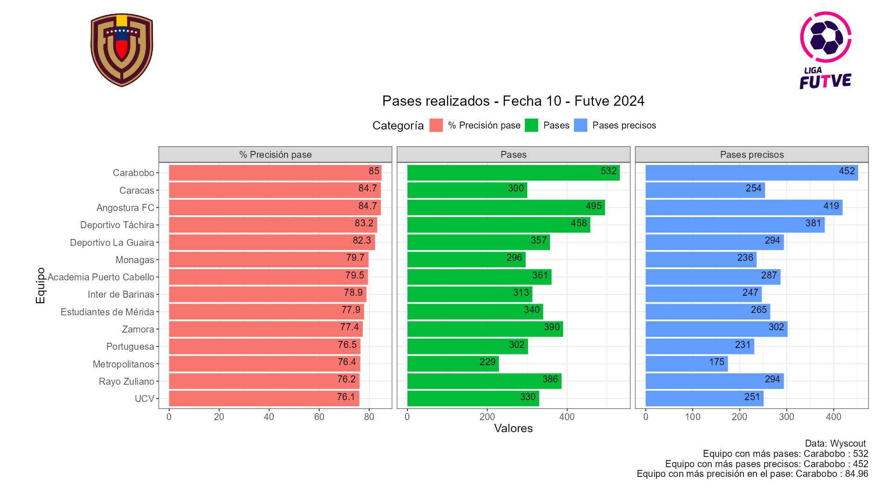
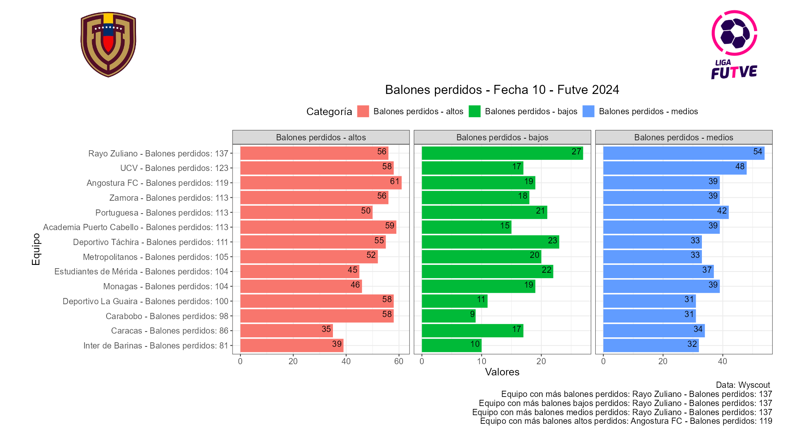
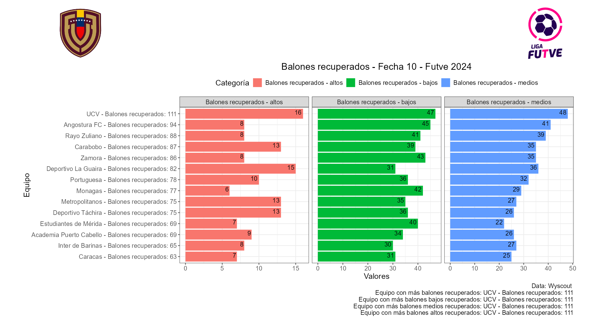
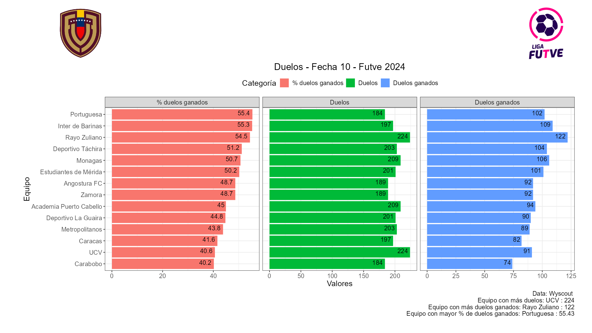

📌 El Monagas en su victoria 2 a 1 frente a Academia Puerto Cabello fue el equipo que mejor aprovechó sus ocasiones marcando un gol más de lo esperado. Por otra parte el Inter de Barinas en su derrota 2 a 1 frente al Caracas FC fue el equipo que menos aprovechó sus ocasiones marcando un gol menos de lo esperado.
📌 En cuanto a los remates, Angostura fue el equipo que más remató con 18 remates, de los cuales 6 fueron a puerta y 1 terminó en gol, esto en la derrota 2 a 1 contra el Zamora. El Portuguesa por su parte fue el equipo que menos remató, con sólo 5 remates de los cuales ninguno fue a puerta, en parte esto explica su derrota 1 a 0 frente al Carabobo.
📌 El Carabobo fue el equipo con mayor precisión en el pase con un 85% , donde realizó 532 pases, 452 de ellos precisos, esto en la victoria 1 a 0 frente al Portuguesa. La UCV por su parte fue el equipo con menos precisión en el pase con un 76.1%, donde realizaron 330 pases, 251 de ellos exitosos, esto en la victoria 1 a 0 frente al Rayo Zuliano.
📌 El Rayo Zuliano por 2da jornada consecutiva fue el equipo que más pérdidas contabilizó esto en la derrorta 1 a 0 frente a la UCV donde tuvieron 137 balones perdidos, 56de ellos en zona alta, 27 en zona baja y 54 en zona media. Por su parte el Inter de Barinas fue el equipo con menos pérdidas de balón con 81, 39 de ellos en zona alta, 10 en zona baja y 32 en zona media.
📌 La UCV fue el equipo con más balones recuperados por 2da jornada consecutiva contabilizando 111, 16 en zona alta, 47 en zona baja y 48 en zona media. Por otra parte el Caracas FC fue el equipo que menos balones recuperó con 63 , 7 de ellos en zona alta, 31 en zona baja y 25 en zona media.
📌 En cuanto a los duelos ganados el Portuguesa fue el equipo con mayor ganancia de los mismos con un 55.4%, donde disputaron 184 duelos y ganaron 102 de ellos. Por otra parte el Carabobo fue el equipo con menos duelos ganados, teniendo éxito en el 40.2 % de las ocasiones, tuvieron 184 duelos de los cuales ganaron 74.
